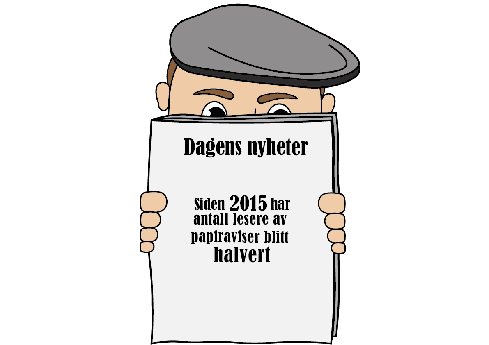
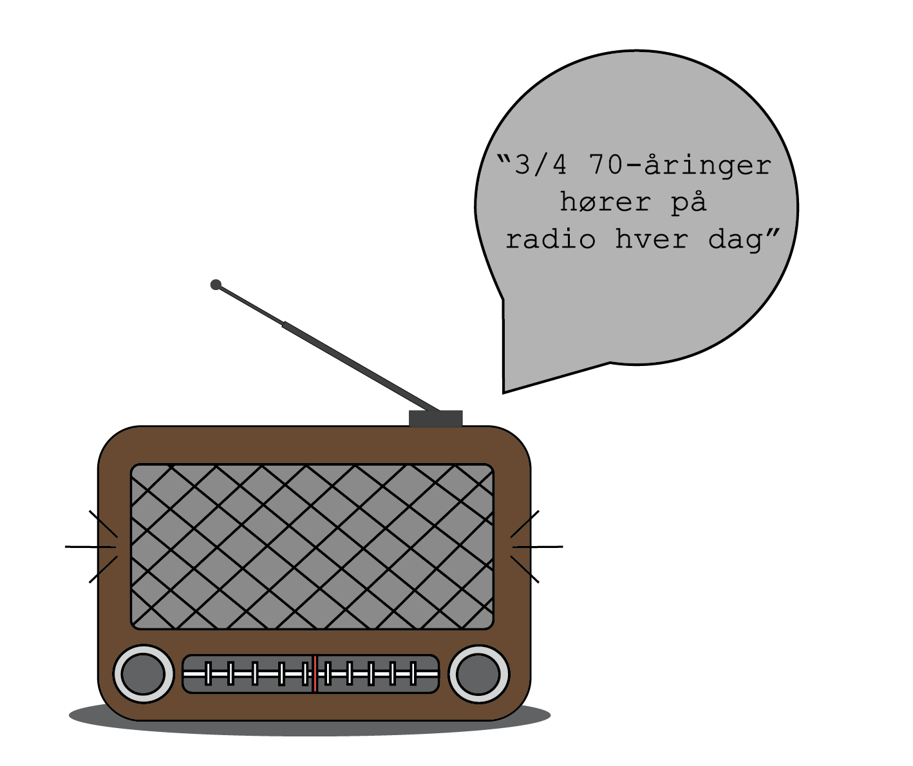
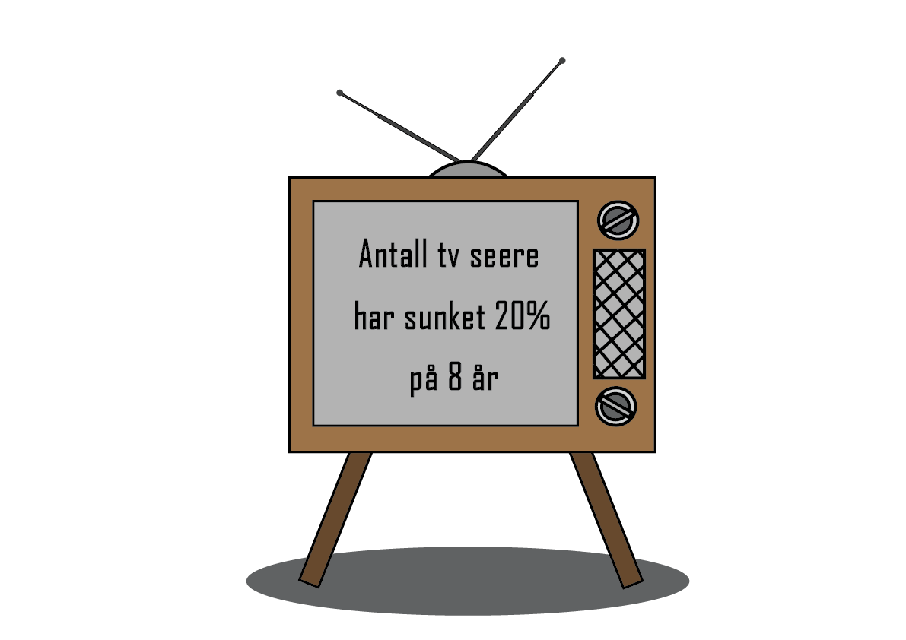
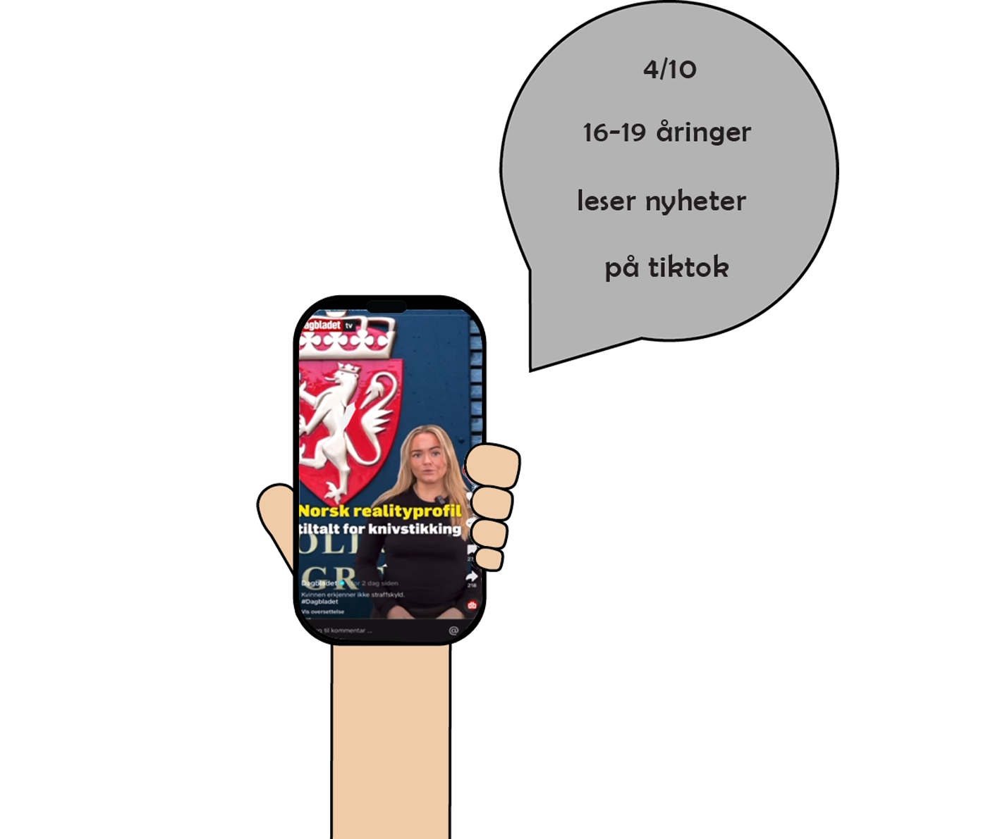

I 1763 så den første avisen lys i Norge. Den gang inneholdt den håndskrevne nyhetsmeldinger.
I 2023 viser en undersøkelse at 4 av 10 ungdommer får med seg nyhetene via sosiale medier-appen TikTok.
Bruken av tradisjonelle medier, som TV, radio og aviser, er på en synkende kurve for de yngre aldersgruppene.
Hvordan har egentlig nyhetens reise vært, og hvem benytter seg av hvilke medier i dag?

AVIS
Mange kan kanskje se for seg foreldre eller besteforeldre sittende i godstolen en lørdags morgen, med kaffen og avisen.
Dette var tiden da de fikk oppdatert seg på gårsdagens viktigste hendelser. Avisen var den viktigste nyhetskilden fra 1763,
frem til radioen kom inn som en konkurrent.

RADIO
På 1920-tallet dukket et nytt medie opp i Norge, nemlig radioen. Plutselig fikk man levende stemmer rett hjem i stua,
som kunne oppdatere en stor gruppe mennesker i sanntid, om både nyheter og underholdning.
Radioen blir ansett som det aller første massemediet. Radioen tronet i familien, både hos barn og voksne,
helt til et nytt medie kom på banen.

TV
Plutselig kunne man også se de som eide stemmene; nemlig på TV. I 1960 var de første ordinære TV-sendingene på plass i Norge.
Nyheter ble rask en del av TV-sendingene, og man kunne få hele verden inn i stua. Hele storfamilien samlet seg foran skjermen
til gitte tider for å få med seg siste nytt. I dag er det færre som benytter seg av lineær-tv, og
bruken har sunket med 20% på åtte år. En ny teknologi har tatt over.

MOBIL
I 2007 lanserte Apple den første moderne smarttelefonen, og det kan virke som om verden aldri så seg tilbake.
Eventuelt opp. Siden 2015 har antallet som benytter seg av avis, radio og lineær-tv dalt kraftig, mens internett
og videomedier stadig øker på statistikkene. Alt finnes i ens egen bukselomme. De ulike nyhetsmediene har slengt seg på,
og lager nå korte videosnutter som oppsummerer små og store nyheter for det yngre publikummet.
STATISTIKKEN
Oppsummert ser vi en tydelig aldersforskjell i bruken av mediene.
De eldre bruker i mye større grad tradisjonelle medier, enn hva de unge gjør.
Det kan se ut til at tradisjonelle medier for nyheter er på vei til å fases ut, til fordel for nettbaserte løsninger.